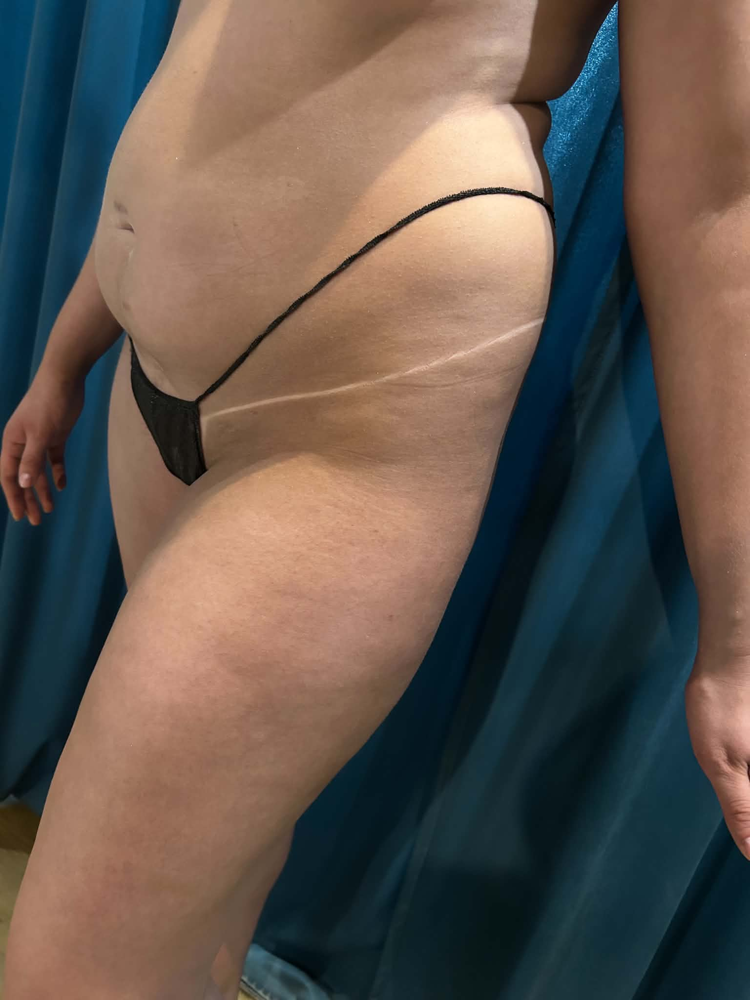
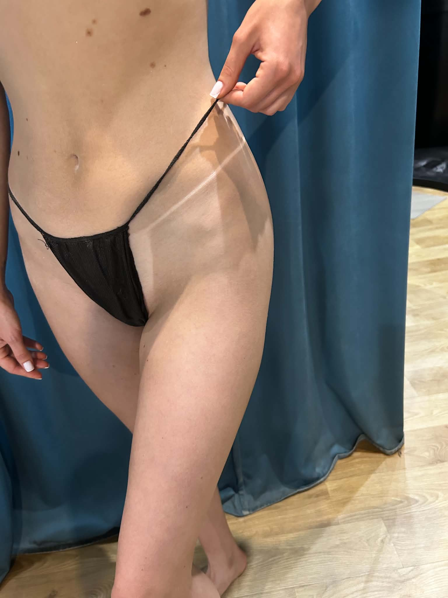
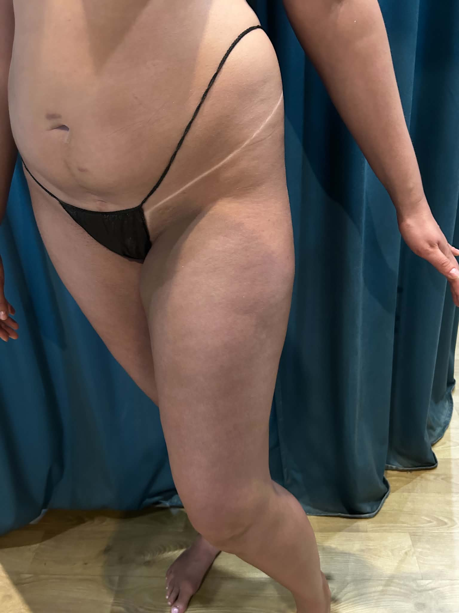

Dlaczego opalanie natryskowe?
Bezpieczne dla skóry
Preparat działa tylko na warstwę rogową naskórka, bez promieniowania UV.
- Odpowiednie dla skóry wrażliwej
- Bezpieczne w ciąży
- Nie powoduje fotostarzenia
Natychmiastowy efekt
Kolor pojawia się od razu, pełny odcień stabilizuje się w ciągu kilku godzin.
- Idealne „na jutro”
- Kolor dobierany indywidualnie
- Bez pomarańczowych tonów
Idealne na ważne okazje
Śluby, sesje zdjęciowe, wyjazdy – równy kolor bez smug.
- Podkreśla sylwetkę
- Wyrównuje koloryt skóry
- Dodaje efektu „glow” na zdjęciach
Efekty
Przykładowe efekty opalania natryskowego.



Jak wygląda zabieg?
- Konsultacja: dobór odcienia, intensywności i oczekiwanego efektu.
- Przygotowanie skóry: zalecany peeling beztłuszczowy dzień wcześniej, skóra sucha w dniu zabiegu.
Także przed zabiegiem nie należy używać antyperspirantów - Ubiór: Zalecane są ciemne ubrania np. długie luźne spodnie i luźna koszulka na rękawki.
- Aplikacja mgiełki DHA: specjalna mgiełka z DHA (dihydroksyaceton) równomiernie rozpylana na skórę.
- Schnięcie: kilka minut, po czym można się delikatnie ubrać.
- Rozwój koloru: pełny efekt po 6–8 godzinach.
DHA to bezbarwny związek chemiczny reagujący z aminokwasami w naskórku, nadając skórze brązowy odcień – bez udziału promieniowania UV.
Więcej o spray tan (opalaniu natryskowym)Cennik Usług
FAQ
Jak długo utrzymuje się efekt?
Najczęściej 7–10 dni, w zależności od pielęgnacji skóry.
Czy opalanie natryskowe jest bezpieczne?
Tak, ponieważ nie wykorzystuje promieniowania UV. Preparaty z DHA są szeroko stosowane w kosmetyce.
Przeczytaj więcej o samoopalaczachCzy mogę iść na siłownię po zabiegu?
Zaleca się unikanie intensywnego pocenia przez pierwsze godziny po zabiegu.